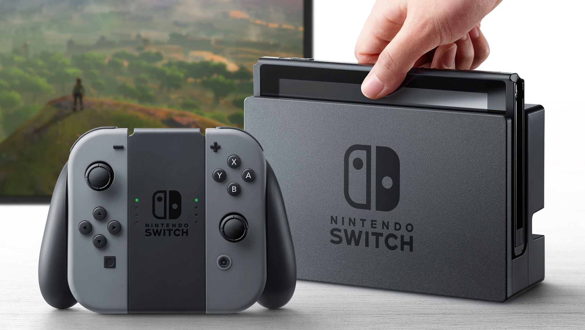

Super Nintendo

La Super Nintendo Entertainment System, conocida popularmente como Super Nintendo o Super NES y abreviada como SNES, es la segunda videoconsola de sobremesa de Nintendo y la sucesora de Nintendo Entertainment System.
Fecha de lanzamiento: 21 de noviembre de 1990
Playstation
PlayStation (oficialmente abreviada como PS o PSone) es la primera videoconsola de sobremesa descontinuada producida por Sony Computer Entertainment. La consola fue diseñada principalmente por Ken Kutaragi y Sony Computer Entertainment en Japón.
Fecha de lanzamiento: 3 de diciembre de 1994
Nintendo 64

Nintendo 64 es la cuarta videoconsola de sobremesa producida por Nintendo, desarrollada para suceder a la SNES. Fue la primera consola concebida para dar el salto al 3D. Creada para competir en ese entonces con la Playstation de Sony.
Fecha de lanzamiento: 23 de junio de 1996
Xbox 360

Xbox 360 es la segunda videoconsola de sobremesa de la marca Xbox producida por Microsoft. Fue desarrollada en colaboración con IBM y ATI, Xbox Live permite a los jugadores competir en línea y descargar contenidos como juegos arcade, demos y películas.
Fecha de lanzamiento: 22 de noviembre de 2005
Playstation 2
PlayStation 2 es la segunda videoconsola de sobremesa producida por Sony Computer Entertainment. Fue la tercera consola de Sony en ser diseñada por el japonés Ken Kutaragi, además de ser la sucesora de la PlayStation. Compitió con Dreamcast, GameCube y la primera Xbox.
Fecha de lanzamiento: 4 de marzo de 2000
Nintendo Wii

Nintendo Wi es la sexta videoconsola descontinuada producida por Nintendo. Perteneciente a la séptima generación de videoconsolas, es la sucesora directa de GameCube y compitió con la Xbox 360 de Microsoft y la PlayStation 3 de Sony.
Fecha de lanzamiento: 19 de noviembre de 2006
PSP
PlayStation Portable (PSP) es una videoconsola portátil de la multinacional de origen japonés sony, y la cuarta consola de Sony en ser diseñada por Ken Kutaragi, PSP servía para videojuegos, conectarse a internet y reproducir y ver multimedia. Se trata de la primera consola portátil a nivel mundial de Sony y la segunda lanzada en Japón.
Fecha de lanzamiento: 12 de diciembre de 2004
Nintendo DS
Nintendo DS es una videoconsola portátil de la multinacional japonesa Nintendo, creada para suceder a la Game Boy Advance. Permite la reproducción de videojuegos y multimedia, y pertenece a la séptima generación cuyo rival directo fue la PlayStation Portable.
Fecha de lanzamiento: 2 de diciembre de 2004
Xbox One
Xbox One es una consola de videojuegos producida por Microsoft. Es la sucesora de la Xbox 360 y la tercera consola de la marca Xbox. Forma parte de las videoconsolas de octava generación. Compitió con PlayStation 4 de Sony y Wii U de Nintendo y más tarde la Switch.
Fecha de lanzamiento: 4 de septiembre de 2014
Nintendo Switch
Nintendo Switch es una consola de videojuegos desarrollada por Nintendo, lanzada a mediados de la octava generación de consolas domésticas, Switch sucedió a Wii U y compitió con PlayStation 4 de Sony y Xbox One de Microsoft; también compite con las consolas de novena generación, la PlayStation 5 y Xbox Series X/S.
Fecha de lanzamiento: 3 de marzo de 2017